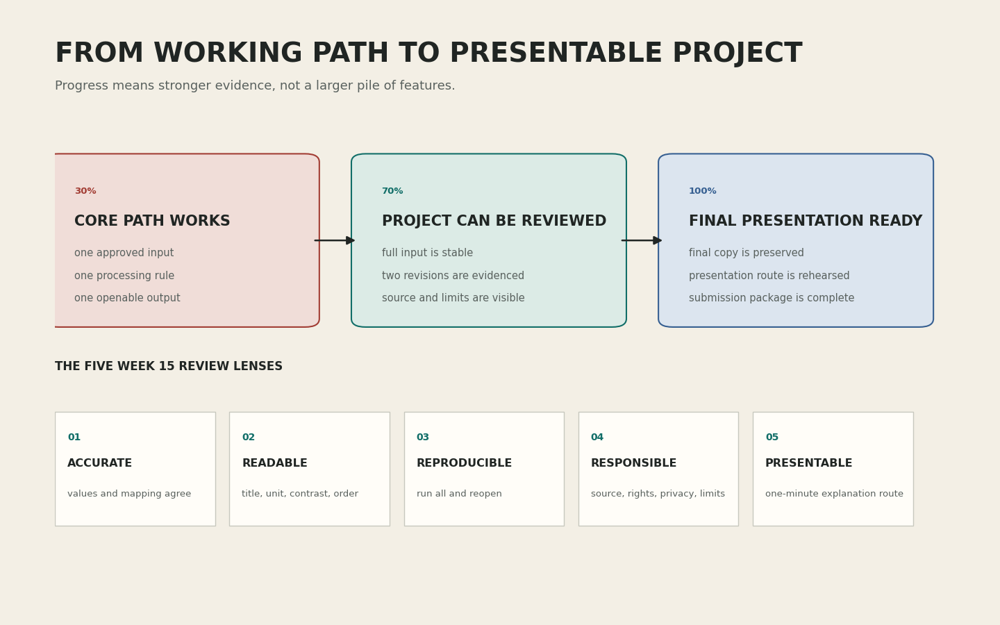

프로토타입을 더 크게 만드는 시간이 아니라 더 분명하게 만드는 시간
강의 개요
14주차 결과를 다섯 기준으로 읽고, 수정 전과 수정 후를 비교할 증거를 설계합니다. 네 프로젝트 경로의 실제 사례를 통해 우선순위를 결정합니다.
학습 목표
작동 여부와 완성도를 구분하고, 문제를 관찰 가능한 문장으로 바꾸며, 제한된 시간 안에 실행할 수정 두 가지를 선택합니다.
학습 성과
수정 대상, 현재 증거, 수정 행동, 완료 증거, 대체 행동을 포함한 수정 계약서를 작성하고 2교시 품질 검증에 사용할 수 있습니다.
- 0-6분14주차 증거 불러오기
- 6-14분70%의 의미
- 14-24분수정 전후 증거
- 24-34분네 경로 사례
- 34-43분수정 우선순위
- 43-50분수정 계약서
- 50-60분선택 확장

원본 PNG 열기 ↗0-6분 · 14주차 결과는 수정 전 기준점이다
14주차 30% 프로토타입은 질문, 입력, 처리, 표현, 저장을 한 번 끝까지 연결한 결과입니다. 완성품은 아니지만 실패한 초안도 아닙니다. 오늘은 이 파일을 수정 전 기준점으로 보존하고, 이후 결과와 나란히 비교합니다.
처음부터 끝까지 순서대로 실행되었는지 확인합니다.
노트북 밖에서 PNG 또는 HTML이 열리는지 확인합니다.
자료 제목, 원본 위치, 기준일, 이용 조건을 다시 읽습니다.
화면에서 가리킬 수 있는 문장인지 확인합니다.
수정 전 파일을 덮어쓰면 좋아졌다는 주장을 증명할 수 없습니다. 파일명에 baseline을 넣고 별도 사본으로 보존합니다. 수정 후 파일은 같은 크기와 같은 입력을 유지해야 비교가 공정합니다.
확인: 지난 결과가 완벽하지 않아도 기준점이 될 수 있는가?
가능합니다. 기준점의 역할은 완벽함이 아니라 현재 상태를 고정하는 것입니다. 오류가 있다면 오류가 보이는 화면과 메시지도 중요한 수정 전 증거가 됩니다.
확인: 코드를 정리한 뒤 수정 전 파일을 저장해도 되는가?
수정 전 증거가 달라지므로 적절하지 않습니다. 먼저 14주차 제출본을 그대로 복사하고 실행 결과를 보존한 뒤 새 사본에서 작업합니다.
6-14분 · 70%는 기능 수가 아니라 신뢰의 수준이다
70%는 기능을 70%만 만들었다는 뜻이 아닙니다. 핵심 질문에 답하는 경로가 작동하며, 예상하지 못한 입력과 새 런타임에서도 다시 실행되고, 독자가 결과와 한계를 읽을 수 있는 상태를 뜻합니다.
- 01 · CORRECT정확성
처리 값과 화면 표시가 일치하는가?
- 02 · READ가독성
제목, 축, 단위와 위계가 읽히는가?
- 03 · REPEAT재현성
새 런타임에서도 같은 절차가 끝나는가?
- 04 · CARE책임성
출처, 이용 조건, 개인정보와 한계를 밝혔는가?
- 05 · EXPLAIN발표 가능성
한 화면에서 질문과 근거를 설명할 수 있는가?
| 검토 항목 | 30%에서 가능한 상태 | 70%에서 요구하는 증거 |
|---|---|---|
| 입력 | 제공 예제 한 번 실행 | 전체 입력과 결측값을 확인하고 예외를 설명함 |
| 표현 | 그래프가 화면에 나타남 | 값, 레이블, 단위, 색 대비와 잘림을 확인함 |
| 실행 | 현재 세션에서 작동함 | 새 런타임 모두 실행으로 다시 작동함 |
| 설명 | 만든 사람이 의미를 알고 있음 | 다른 사람이 질문, 근거, 한계를 결과에서 찾을 수 있음 |
확인: 버튼이나 애니메이션을 추가하면 자동으로 70%가 되는가?
그렇지 않습니다. 새 기능이 핵심 질문의 이해를 돕지 않거나 재실행을 어렵게 만들면 완성도는 오히려 낮아집니다. 먼저 다섯 렌즈의 증거를 채웁니다.
14-24분 · 좋은 수정은 전후 차이를 증명한다
“더 예쁘게 만들었다”는 완료 기준이 모호합니다. 좋은 수정은 문제 관찰 → 수정 행동 → 수정 후 증거의 세 문장으로 기록할 수 있습니다. 두 화면은 가능한 한 같은 입력, 같은 출력 크기, 같은 비교 범위를 사용합니다.
 원본 PNG 열기 ↗
원본 PNG 열기 ↗
문제의 위치를 가리킬 수 있어야 합니다. 예: 막대의 단위가 없고 범주 이름이 잘린다.
완료 조건이 보이는 결과로 바뀌어야 합니다. 예: 축에 단위를 쓰고 긴 이름이 모두 보인다.
문제 대신 증거를 쓰기
“그래프가 이상하다”를 “세 번째 막대의 값은 18인데 화면 레이블은 16이다”로 바꿉니다. 이어서 확인 가능한 수정 후 문장을 작성합니다.
확인: 전후 화면의 색과 크기를 모두 바꾸어도 되는가?
한 번에 여러 조건을 바꾸면 무엇이 효과를 만들었는지 알기 어렵습니다. 입력과 크기를 고정하고 이번 계약에서 선택한 요소만 바꾸는 편이 좋습니다.
확인: 오류가 사라졌으면 수정 후 증거가 충분한가?
오류 메시지가 사라진 사실과 결과가 올바른 사실은 다릅니다. 예상 값과 실제 값, 결과 파일 열림, 가독성을 함께 확인해야 합니다.
24-34분 · 네 프로젝트 경로의 수정 사례
데이터 경로
관찰: 결측값 한 행이 합계에서 조용히 빠지고 축에 단위가 없습니다.
행동: 결측 행 수를 먼저 출력하고 제외 규칙을 주석과 캡션에 기록합니다. 막대 끝에는 실제 값, 축에는 단위를 표시합니다.
증거: 입력 행 수, 제외 행 수, 집계 합계와 막대 레이블이 일치합니다.
텍스트 경로
관찰: 대문자와 문장 부호 때문에 같은 단어가 여러 항목으로 나뉩니다.
행동: 소문자 변환과 문장 부호 제거 순서를 고정하고 제외 단어 목록을 공개합니다.
증거: 원문 토큰 수, 정규화 뒤 토큰 수, 상위 단어의 실제 출현 위치를 확인합니다.
사운드 경로
관찰: RMS 곡선은 보이지만 가로축이 샘플인지 초인지 알 수 없습니다.
행동: 샘플레이트로 시간을 계산하고 중요한 구간의 시작 시각을 표식으로 추가합니다.
증거: 파일 길이와 시간축 끝점이 일치하고 표식 위치의 에너지 값을 다시 계산할 수 있습니다.
규칙 기반 이미지 경로
관찰: 가장자리의 원이 저장된 이미지에서 잘리고, 색만으로 범주를 구분합니다.
행동: 반지름을 포함한 안전 범위를 검사하고 색과 윤곽선 모양을 함께 사용합니다.
증거: 모든 도형의 경계가 캔버스 안에 있고 흑백에서도 범주를 구분할 수 있습니다.
확인: 내 경로와 다른 사례도 알아야 하는가?
코드는 다르지만 원리는 같습니다. 입력이 어떻게 처리되었는지 밝히고, 처리 값과 화면 요소의 일치를 확인하며, 다른 환경에서 결과를 다시 만드는 구조를 찾습니다.
확인: 색 대비가 충분하면 색만으로 구분해도 되는가?
색을 인식하기 어려운 독자와 흑백 출력에서는 차이가 사라질 수 있습니다. 색에 더해 레이블, 윤곽선, 위치 또는 패턴 가운데 하나를 함께 사용합니다.
34-43분 · 수정 우선순위는 위험과 효과로 정한다
발견한 문제를 모두 고치려 하면 3교시 안에 핵심 결과를 잃을 수 있습니다. 먼저 질문에 대한 답을 틀리게 만드는 문제, 실행을 멈추는 문제, 출처와 개인정보 문제를 처리합니다. 다음으로 독자가 오해하는 문제를 고치고, 장식은 마지막에 둡니다.
| 등급 | 판별 질문 | 사례 | 행동 |
|---|---|---|---|
| Must | 결과가 틀리거나 실행·권리 문제가 생기는가? | 잘못된 합계, 열리지 않는 파일, 불명확한 이용 조건 | 오늘 반드시 수정 |
| Should | 독자가 결과를 오해하거나 읽기 어려운가? | 단위 누락, 낮은 대비, 모호한 제목 | Must 뒤 수정 |
| Could | 없어도 핵심 질문과 증거가 유지되는가? | 애니메이션, 추가 화면, 장식 효과 | 필수 결과 보존 뒤 선택 |
두 수정은 서로 다른 위험을 다루는 편이 좋습니다. 예를 들어 정확성 수정 하나와 가독성 수정 하나를 고르면 코드와 결과의 신뢰를 함께 높일 수 있습니다. 두 항목이 모두 색 변경이면 중요한 실행 문제가 남을 수 있습니다.
확인: 가장 눈에 띄는 문제를 먼저 고치면 되는가?
시각적으로 큰 문제가 항상 가장 위험한 것은 아닙니다. 값이 틀렸거나 자료의 권한이 불분명한 문제는 화면이 단정해 보여도 Must입니다.
확인: 수정 행동을 “코드 개선”이라고 써도 되는가?
대상과 완료 증거가 보이지 않습니다. “결측값 행을 집계 전에 세고 제외 수를 캡션에 표시한다”처럼 수정 대상, 동작, 확인 결과를 함께 씁니다.
43-50분 · 두 가지 수정 계약서 작성하기
수정 계약서는 작업 목록이 아니라 3교시의 종료 조건입니다. 항목이 구체적일수록 일찍 끝났는지 명확히 판단할 수 있습니다. 범위가 크면 수정 대상을 더 작게 나눕니다.
수정 계약서 한 장
- 1. 유지할 질문
14주차와 동일한 핵심 질문 한 문장 - 2. 기준 파일
수정 전 노트북과 결과 파일명 - 3. 수정 행동 1
대상, 동작, 완료 증거 - 4. 수정 행동 2
다른 대상, 동작, 완료 증거 - 5. 수정하지 않을 것
오늘 범위에서 제외할 기능 - 6. 대체 행동
10분 이상 막힐 때 사용할 단순한 경로
작성 예
“행동 1: 결측값을 집계 전에 검사하고 제외한 행 수를 출력한다. 완료 증거: 원본 120행, 유효 117행, 제외 3행이 보인다. 행동 2: x축에 단위와 출처 기준일을 표시한다. 완료 증거: 저장된 PNG에서 두 정보가 잘리지 않는다.”
확인: 수정 두 가지를 모두 큰 기능으로 정해도 되는가?
50분 안에 증거까지 남길 수 없다면 범위가 큽니다. 화면 추가보다 한 그래프의 값 검증, 단위, 출처처럼 완료 여부를 직접 확인할 수 있는 행동을 선택합니다.
확인: 예상보다 빨리 끝나면 새 기능을 바로 추가해도 되는가?
먼저 수정 전후 파일과 기록을 보존하고 새 런타임 검증을 마칩니다. 필수 증거를 잃지 않는 사본에서만 선택 확장을 진행합니다.
50-60분 · 선택 확장: 두 계약안 비교하기
기본 50분 안에 계약서를 완성한 학생만 개별로 진행합니다. A안은 정확성 + 가독성, B안은 재현성 + 발표 가능성처럼 서로 다른 두 조합을 만들고 다음 항목을 비교합니다.
- 각 안이 줄이는 가장 큰 위험을 한 문장으로 씁니다.
- 필요한 코드 위치와 결과 파일을 적습니다.
- 완료를 판단할 눈에 보이는 증거를 적습니다.
- 10분 안에 막힐 때 사용할 대체 행동을 적습니다.
- 3교시에는 어느 안을 사용할지 근거와 함께 결정합니다.
기본 50분 / 확장 60분
수정 계약서 한 장이 완성되면 기본 수업 목표를 달성한 것입니다. 확장은 필수 과제와 추가 점수가 아니며, 남은 시간에 더 어려운 기능을 시작하라는 뜻도 아닙니다.
수업 후 개별 복습
- 30%와 70%의 차이를 기능 수가 아닌 증거 수준으로 설명합니다.
- 자신의 프로젝트에서 Must 문제 하나와 Should 문제 하나를 적습니다.
- 수정 전후 비교에서 고정해야 할 조건 두 가지를 적습니다.
- 수정 행동 하나를 대상, 동작, 완료 증거의 세 부분으로 다시 씁니다.
- 2교시에서 전체 입력과 새 런타임으로 확인할 항목을 표시합니다.
공식 사례와 참고 자료
- Matplotlib 공식 사례: 막대 레이블처리 값이 그래프 표시에 정확히 연결되는 방법을 확인합니다.
- pandas 공식 안내: 결측값비어 있는 값의 종류와 처리 결과에 미치는 영향을 확인합니다.
- W3C WCAG 2.2: 색상 사용정보를 색만으로 전달하지 않아야 하는 이유와 사례를 확인합니다.